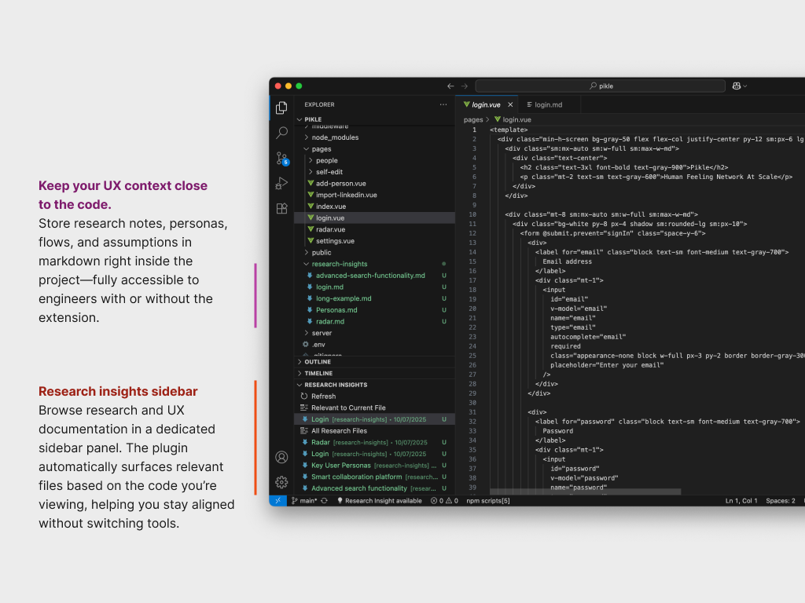
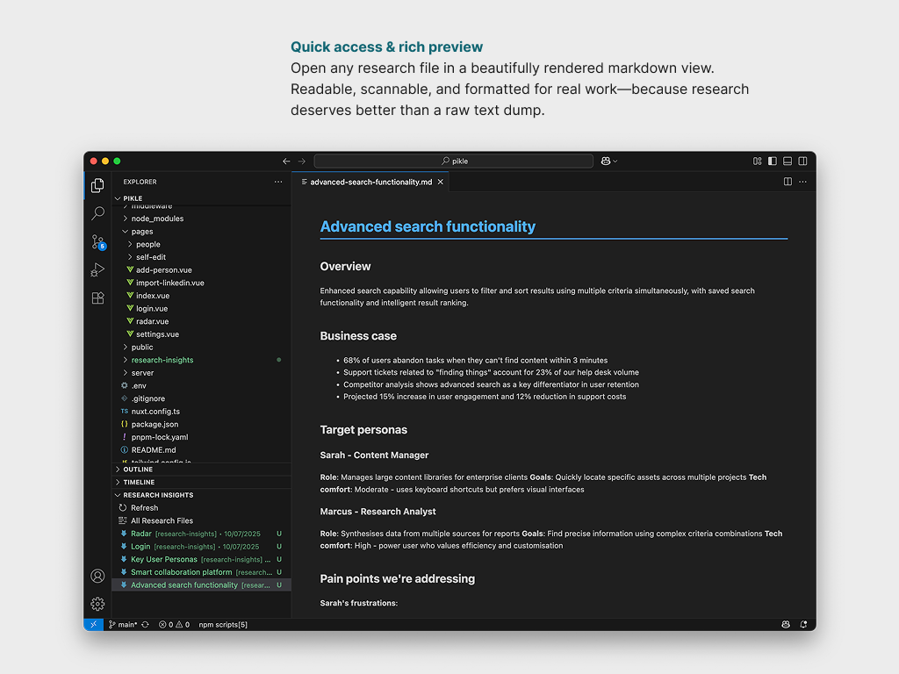

Over time, I've become increasingly uncomfortable with how easily design context gets lost once work moves from research into delivery. In most organisations, research lives in one place, design decisions get compressed into artefacts, and developers receive the outcome without the reasoning that shaped it. The result is predictable: well-intentioned divergence, fragile trust in design decisions, and a constant need for clarification and handover.
The experiment behind this project started from an idea: what if research lived alongside the code it informs? Not as static documentation or links out to a repository few people open, but as first-class, versioned artefacts inside the same environment where features are built. By co-locating research, rationale, and constraints with implementation, context could become something you encounter in the flow of work rather than something you're asked to remember or reconstruct later. Ideally it flattens the distance between thinking and building.
There's also a forward-looking dimension to this. As AI-assisted coding becomes normal, the quality of what we build will increasingly depend on the quality of context we give these systems. Code alone is insufficient. Intent, trade-offs, and evidence matter. Treating research as part of the repository acknowledges that design knowledge is not peripheral, but structural. The plugin that follows is one expression of that principle, not the point in itself, but a way of testing whether this kind of proximity can meaningfully change how teams understand, trust, and extend design decisions over time.

